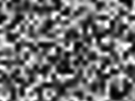

第２回 パレイドリア研究会
トーストの中に見えるイエス・キリスト像の脳機能イメージング研究が2014年イグノーベル賞を獲得するなど、パレイドリア現象に関する研究は徐々に盛り上がりを見せています。
この度、日本心理学会第79回大会内・公募シンポジウム「SS-101 パレイドリア〜その先にあるもの」として、３名の講演者をお招きして第２回パレイドリア研究会を実施いたします。 講演者・参加者交えて自由な議論ができれば幸いです。 多くの方のお越しをお待ちしております。
※参加には日本心理学会第79回大会への参加登録が必須です。
- 日時
- 2015年9月24日 (木) 15:30–17:30 （心理学会最終日の最終スロット）
- 場所
- 名古屋国際会議場（日本心理学会第79回大会） 第5会場／1号館131+132
日本心理学会公式サイトのアクセス案内
- 招待講演
- 「脳疾患におけるパレイドリア：幻視のメカニズムの覗き窓」
西尾慶之（東北大学医学系研究科高次機能障害学）レビー小体型認知症、パーキンソン病などの脳疾患では、幻視が高頻度で観察される。幻視は診断や治療において重要な意義を持つ症候であるのみならず、正常の知覚体験のメカニズムを考える上でたいへん興味深い現象である。演者は、パレイドリアと幻視の類似性に着目し、患者が日常に体験している錯知覚を直接的に観察し、内観を引き出そうと試みてきた。本シンポジウムでは、その研究から得られたこれまでの成果を紹介する。
- 「パレイドリア効果と擬人化工学：人の特性から人の能力への組み換え」
大澤博隆（筑波大学システム情報系知能機能工学域）無意味な環境中の情報に対し、意味を見出してしまうパレイドリア効果は、人間の知覚のもつ特性であり、しばしば人間の正常な認識に対する阻害要因とみなされる。しかし、インタフェースにこのような錯覚を積極的に用いることで、むしろ人間の認識を促進する材料とすることも可能である。本シンポジウムでは、演者がこれまで行ってきた擬人化インタフェース研究を参考としつつ、パレイドリア効果の工学的応用について検討する。
- 「チンパンジーは火星に顔を見る（か）」
友永雅己（京都大学）ヒトを含む霊長類にとって、顔は重要な社会的刺激であり、顔を構成するパーツの空間的レイアウトは識別のための重要な手がかりである。では「顔らしさ」の範囲も種を超えて共有されているのだろうか。パレイドリア現象はこの問いに対する有効なツールである。今回は、チンパンジーを対象にした非顔刺激の視線弁別と検出効率、トップダウン制御による顔的パターンの検出について紹介し、彼らの顔認識の範囲と限界について検討する。
- 企画・司会
- 高橋 康介（東京大学）
- 北村美穂（NTTコミュニケーション基礎科学研究所）
- 加地雄一（東京家政学院大学）
- 北川智利（NTTコミュニケーション基礎科学研究所）
- 連絡先・お問い合わせ
- 高橋康介 (東京大学先端科学技術研究センター)

- 過去のパレイドリア研究会
